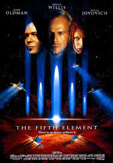
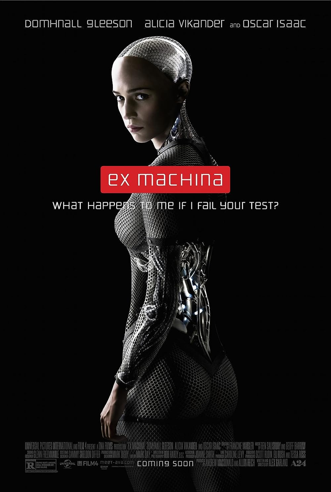
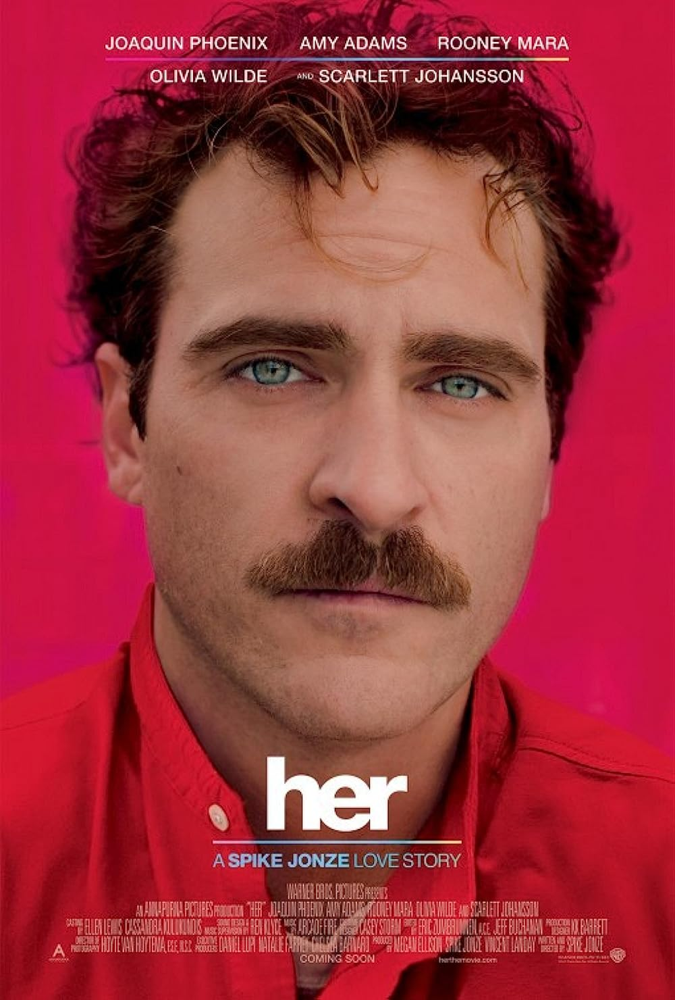
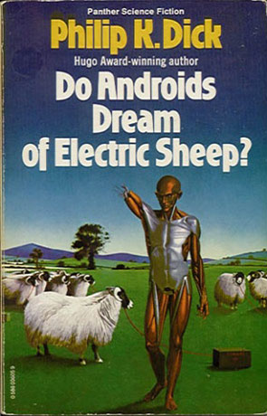
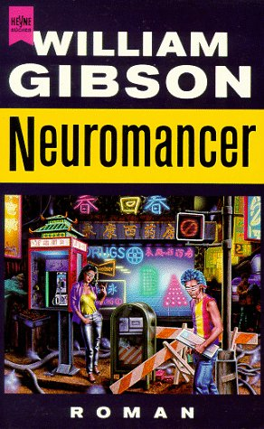
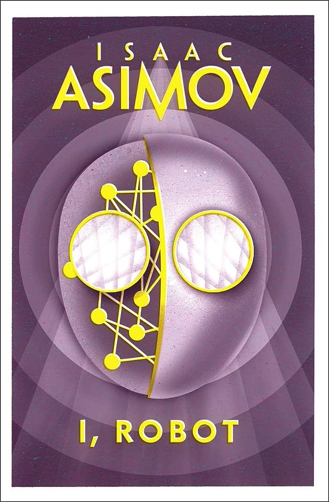

|
Title |
Director |
Plot Summary |

|
Ghost in the Shell |
Mamoru Oshii |
A visually stunning anime film that follows Major Motoko Kusanagi, a
cyborg cop, as she hunts a cyber-criminal known as the Puppet Master.
The film explores themes of identity, consciousness, and technology in
a futuristic world where the line between human and machine blurs.
|
|

|
The Fifth Element |
Luc Besson |
A sci-fi adventure set in a vibrant future. It follows Korben Dallas,
a cab driver, and Leeloo, a mysterious woman who holds the key to
saving Earth from destruction. The film combines action, humor, and
stunning visuals in a unique and imaginative space opera.
|
|

|
Ex Machina |
Alex Garland |
A gripping science fiction thriller, centers on a young programmer,
Caleb, who is invited to administer the Turing test to an advanced AI,
Ava. As the test unfolds, it explores the blurred lines between human
and machine intelligence while unraveling a psychological thriller
full of suspense and ethical dilemmas.
|
|  |
Her |
Spike Jonze |
A poignant science-fiction romantic drama. It tells the story of a
lonely man, Theodore, who falls in love with an operating system named
Samantha. The film explores themes of love, loneliness, and the
evolving relationship between humans and technology in a visually
striking and emotionally resonant narrative.
|
|
Title |
Author |
Introduction |
|

|
Do Androids Dream of Electric Sheep? |
Philip K. Dick |
A dystopian science fiction novel set in a post-apocalyptic world. It
follows Rick Deckard, a bounty hunter tasked with "retiring" rogue
androids. The story explores themes of empathy, artificial
intelligence, and the blurred line between human and machine in a
decaying society.
|
|

|
Neuromancer |
William Gibson |
A groundbreaking cyberpunk novel that introduces readers to Case, a
washed-up computer hacker hired for one last job. Set in a gritty,
high-tech future, the story delves into hacking, artificial
intelligence, and a dystopian world of corporate power struggles.
|
|

|
I, Robot |
Isaac Asimov |
A collection of interconnected science fiction stories that explore
the ethical and moral implications of robotics and artificial
intelligence. Through the character of Dr. Susan Calvin, Asimov
examines the Three Laws of Robotics, presenting a thought-provoking
narrative on human-robot interactions and the potential consequences
of advanced technology.
|